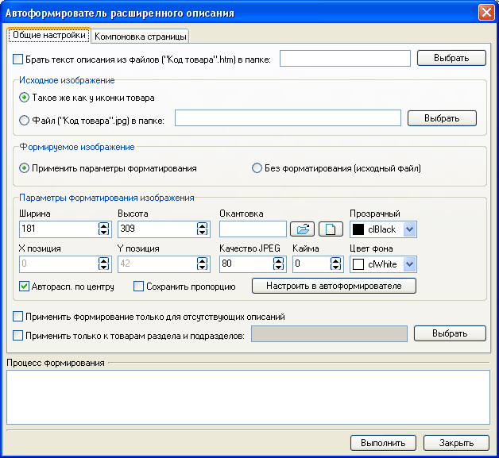

В случае импорта товаров с изображениями и необходимости добавления к ним простого расширенного описания (одно изображение и текстовый блок) имеет смысл для упрощения работы воспользоваться автоформирователем расширенного описания. После формирования расширенных описаний они могут быть отредактированы индивидуально для каждого товара, см. расширенное описание товара.

Автоформирователь позволяет автоматически получить расширенное описание товара, на основе текста (если, задан, то берется из файла) и изображения (берется исходное к иконке этого же товара, либо подгружается отдельно из файла). На закладке "Компоновка страницы", указываются настройки по виду и макету для расширенного описания.